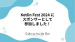

Cybozu Inside Out | サイボウズエンジニアのブログ
https://blog.cybozu.io/
サイボウズ株式会社、サイボウズ・ラボ株式会社のエンジニアが提供する技術ブログです。製品やサービスの開発、運用で得た技術情報やエンジニアの活動、採用情報などをお届けします。
フィード
リレーブログ企画：自動テストをQAが実装可能にする取り組み「QAムキムキ化」 1
1
Cybozu Inside Out | サイボウズエンジニアのブログ
こんにちは。kintone開発チームでスクラムマスター兼QAをしている「とうま」（@toma_cy）です。 サイボウズではQAについてより多くの方に知ってもらう啓蒙活動の一環として、リレーブログ企画を開催しています。 blog.cybozu.io 今回は、自チームで行っている「QAムキムキ化」の活動について書きたいと思います。 QAムキムキ化とは 自動テスト（主にE2E）をQAが実装可能にするための取り組みです。 「QAムキムキ化」という表現は社内の他チームが名付けたものですが、響きがキャッチーなので真似させてもらっています。 この取り組みは、他チームも多かれ少なかれやっているのですが、ここで…
4日前

Kotlin Fest 2024 にスポンサーとして参加しました！
Cybozu Inside Out | サイボウズエンジニアのブログ
こんにちは！kintoneチーム所属のAndroidエンジニア、トニオ（@tonionagauzzi）です。 2024年6月22日（土）に Kotlin Fest 2024 が開催されました。 サイボウズはスポンサーとして協賛し、会場にブースを設置しました！ 参加レポート 今年のKotlin Festは、2019年以来のオフライン開催でした。 場所はベルサール渋谷ファーストです。 Kotlin Festのセッション 今年も多くのセッションがあり、Kotlinに関する選りすぐりの発表が行われました！ 僕自身はブースで多くの時間を過ごしたので、録画や資料を追って確認したいと思います！ サイボウズブ…
5日前
2024年もAndroidエンジニアでGoogle I/O報告LT会を開催しました！
Cybozu Inside Out | サイボウズエンジニアのブログ
こんにちは、kintone開発チームのAndroid担当のトニオ（@tonionagauzzi）です。 今年もGoogle I/O報告LT会を開催しましたので、その様子をお伝えします。 Google I/Oとは？ Google I/Oとは、Googleが毎年開催する開発者向けイベントです。 今年は去年以上にAI関連サービスの発表が多く、見応えタップリだったのではないかと思います！ LT会について 今回紹介するLT会は、サイボウズの各プロダクトを担当するAndroidエンジニアが集い、Google I/Oで気になったセッションをライトニングトーク形式で紹介しあうイベントです。 2022年(第1回…
11日前
Waffle Festival2024に協賛、QAエンジニアの斉藤裕希さんが中高生・大学生向けにスピーチをしました 1
Cybozu Inside Out | サイボウズエンジニアのブログ
現地会場の様子 こんにちは！サイボウズ People Experienceチームのhokatomo(@tomoko_and)です。 2024年5月に開催された「Waffle Festival2024」にサイボウズはシルバースポンサーとして協賛しました。 Waffle Festival 2024は、ITの仕事や学びがまるごとわかる、女子＆ノンバイナリーの中高生・大学生向けのテックイベントです。 当日は現地原宿会場で、サイボウズのQAエンジニア斎藤裕希さんがスピーチをしました。当日の様子や、この協賛にあたりPeople Experienceが担当した範囲についてレポートします。 waffle-fe…
12日前
初心者スクラムマスターはどうやってスクラムをチームに定着させたのか？ 3
Cybozu Inside Out | サイボウズエンジニアのブログ
はじめに こんにちは。開発者とスクラムマスター(以下、SM)をしている金丸です。 サイボウズのGaroonという製品の開発チームに所属しています。 サイボウズではSMのことを社内外問わず、より多くの人に知ってもらう啓蒙活動の一環として、サイボウズのSM達によるリレーブログ企画を開催しています。 blog.cybozu.io チームでスクラムを始めて約1年経ち、良い機会と感じましたので、このリレーブログに参戦させていただきます。 今回は、いち開発者がどうやってSMを始めたのか、そして自身の所属するチームにどうやってスクラムを定着させていったのか、自らの経験をベースにお話させていただこうと思います…
12日前

リレーブログ企画：サイボウズ Office/MailWiseチームにおける改善の取り組み「困りごと共有会」
Cybozu Inside Out | サイボウズエンジニアのブログ
こんにちは、QA（品質保証）エンジニアの斉藤です。サイボウズ Office/MailWiseチームに所属しています。 今回はリレーブログ企画ということでチームで行っている改善の取り組み「困りごと共有会」について書きたいと思います。 困りごと共有会とは kintoneのアプリに日々の「困りごと」を登録していき、月に1回そのアプリをサイボウズ Office/MailWiseのQAメンバーで確認して改善策を検討する会です。 「特に強く困ってるわけではないけれど、ハードル低く話してみる」というコンセプトで開催しています。 「この作業がしんどいので手間を減らせないか」「これに時間がかかっているので、もっ…
18日前
サイボウズは JaSST'24 Kansai で協賛＆登壇します！
Cybozu Inside Out | サイボウズエンジニアのブログ
こんにちは、QA（品質保証）エンジニアの斉藤です。 サイボウズは、2024年6月21日(金)に開催されるJaSST'24 Kansaiに協賛しています。 また、テクノロジーセッションにて登壇いたしますので、本記事ではその紹介をさせてください。 協賛について サイボウズでは「チームワークあふれる社会を創る」という企業理念のもと、kintoneやGaroon、 サイボウズ Office、メールワイズなどチームを支えるサービスを開発しています。 その中でサイボウズのQAエンジニアは開発プロセス全体を通して品質を高める活動を行なっています。 そんな私たちが日々の活動でお世話になっているソフトウェアテス…
21日前
リレーブログ企画：サイボウズ QAエンジニアの取り組み紹介
Cybozu Inside Out | サイボウズエンジニアのブログ
こんにちは。QAエンジニア マネージャーの匠です。 昨今、「QAエンジニア」という言葉が少し一般的になってきた印象はありますが、ひとくちにQAエンジニアといってもその活動内容は多岐にわたり、また組織やチームによって担う役割が異なる場合も多くあります。 サイボウズでは各チームが自律的に動きやすい環境を整えてきたこともあり、画一的な開発プロセスではなく、各チームが必要なものを検討して日々活動しています。 当然、QAエンジニアの役割や取り組みも各チームで異なります。 このリレーブログ企画では、サイボウズのQAエンジニアについてより多くの方に知っていただくことを目的に、数か月にわたって、各チームに所属…
21日前
サイボウズは Kotlin Fest 2024 にスポンサーとして協賛します！
Cybozu Inside Out | サイボウズエンジニアのブログ
こんにちは！kintone チーム所属の Android エンジニア、トニオ（@tonionagauzzi）です。 サイボウズは、2024年6月22日(土) に開催される Kotlin Fest 2024 へスポンサーとして協賛し、ブースを出展します！ Kotlin Fest とサイボウズ Kotlin Fest は、「Kotlin™ を愛でる」をビジョンに、Kotlin に関する知見の共有や、Kotlin ファンとの交流の場が提供される技術カンファレンスです。 今年は、ベルサール渋谷ファーストにてオフラインで開催されます！🙌 サイボウズでは、Android エンジニアなどが Kotlin を…
25日前
スクラムをやっていないチームでスクラムマスターとして振る舞ってみた
Cybozu Inside Out | サイボウズエンジニアのブログ
こんにちは！kintone Design System（kDS）チームでスクラムマスター（以降 SM）をやっている中川（@hayate4th）です。 サイボウズでは SM の仕事をより多くの方々に知ってもらう啓蒙活動の一環として、リレーブログ企画を開催しています。 blog.cybozu.io 対象者: スクラムマスターが近くにいるけどありがたみを感じたことがない人 学習成果: 記事の内容に関連する悩みについて、近くのスクラムマスターに相談できるようになる この記事では、スクラムはやっていないが SM 的な振る舞いをするメンバーがいることによってチームにどういった変化があったのかお話ししていき…
25日前
サイボウズは JaSST'24 Tohoku で協賛＆登壇します！
Cybozu Inside Out | サイボウズエンジニアのブログ
こんにちは、QA（品質保証）エンジニアの銭丸です。 サイボウズは 2024年5月31日(金)に開催されるJaSST'24 Tohokuに、ゴールドスポンサーとして協賛します。 また、スポンサーライトニングトークスにて登壇いたしますので、本記事ではその紹介をさせてください。 協賛について サイボウズでは「チームワークあふれる社会を創る」という企業理念のもと、kintoneやGaroon、サイボウズ Office、メールワイズなどチームを支えるサービスを開発しています。 その中でサイボウズのQAエンジニアは開発プロセス全体を通して品質を高める活動を行なっています。 そんな私たちが日々の活動でお世話…
1ヶ月前
スクラムチームで始めたAndroidアプリのテスト駆動開発
Cybozu Inside Out | サイボウズエンジニアのブログ
こんにちは！kintoneチーム所属のAndroidエンジニア、トニオ（@tonionagauzzi）です。 サイボウズでは、スクラムマスター（SM）の仕事をより多くの方々に知ってもらう啓蒙活動の一環として、リレーブログ企画を開催しています。 blog.cybozu.io 対象者: スクラムマスターが近くにいるけどありがたみを感じたことがない人 学習成果: 記事の内容に関連する悩みについて、近くのスクラムマスターに相談できるようになる この記事では、スクラムの開発チーム目線で、私が所属するAndroidチームが実践しているテスト駆動開発（TDD）という手法を紹介します。 この記事を通じて、社外…
1ヶ月前
アクセシビリティの改善のために React Aria を活用しています
Cybozu Inside Out | サイボウズエンジニアのブログ
こんにちは！DOGO プロジェクトでソフトウェアエンジニアとして活動している @nissy_dev です。 DOGO プロジェクトでは、React Aria を活用してアクセシビリティの改善を行っています。 今回の記事では、React Aria を国内にもっと広めて行きたいということで、React Aria を利用することに決めた理由を振り返りつつ、React Aria について簡単に紹介します。 目次 OSS を活用した効率なアクセシビリティの改善 ライブラリの選定 React Aria の概要 Next.js App Router との相性 終わりに OSS を活用した効率なアクセシビリテ…
1ヶ月前
WKWebViewをSwiftUIに適したインターフェースで扱えるラッパーライブラリをOSSとして公開しました！
Cybozu Inside Out | サイボウズエンジニアのブログ
はじめに こんにちは、iOSエンジニアのKyome（@Kyomesuke）です。 私が担当しているkintoneのモバイルアプリはWKWebViewを用いたハイブリッドアプリなのですが、UIKitからSwiftUIへのリプレイスにあたってWebViewをSwiftUIに適したインターフェースで（つまり宣言的UIで）実装したいという需要が高まっていました。 しかし現在、SwiftUIと互換性のある宣言的UIなWebViewのAPIはAppleから提供されていません。 そこで、WKWebViewをSwiftUIに適したインターフェースで扱えるようにしたラッパーライブラリを開発しました！ この記事で…
1ヶ月前
サイボウズの kintone 開発チームに「スクラムマスターが近くにいてありがたいと感じたエピソード」と「今後の活動への期待」を聞いてみた
Cybozu Inside Out | サイボウズエンジニアのブログ
こんにちは。kintone 開発チームでスクラムマスター（以下 SM）をしている村田（@kuroppe1819）です。サイボウズでは SM の仕事をより多くの方々に知ってもらう啓蒙活動の一環として、リレーブログ企画を開催しています。 リレーブログ企画：スクラムマスターって何をするの？チームを健全に保つ多様なリーダーシップの実際 - Cybozu Inside Out | サイボウズエンジニアのブログ 対象者 スクラムマスターが近くにいるけどありがたみを感じたことがない人 学習成果 (Learning Outcome) 記事の内容に関連する悩みについて、近くのスクラムマスターに相談できるようにな…
2ヶ月前
「CSS Library / Framework」をテーマに「BARフロントえんどう #2」を開催しました！
Cybozu Inside Out | サイボウズエンジニアのブログ
こんにちは。 フロントエンドエキスパートチームの Saji です 2024 年 4 月 19 日(金)にサイボウズのフロントエンドエンジニア主催で第 2 回 BARフロントえんどうを開催しました。 本記事では、当日の様子やセッションについて紹介します。 BARフロントえんどうとは BARフロントえんどうは Web フロントエンドのトピックからテーマを選び、登壇者や参加者の間で情報を共有することで知見を深めてもらおうというコンセプトの勉強会です。 第 2 回を迎える今回は「CSS Library / Framework」をテーマとして開催しました。 フロントエンドリアーキテクトをテーマとした第 …
2ヶ月前
try! Swift Tokyo 2024 参加レポート
Cybozu Inside Out | サイボウズエンジニアのブログ
はじめに こんにちは！ サイボウズでiOSエンジニアをしている岡です。 先月の3/22-24に行われたtry! Swift Tokyo 2024に参加してきました！ 視聴者として参加しただけでなく、スポンサーとしても参加してきましたので出展したブースの様子や個人的に感じたポイントを参加レポートとして書きまとめたいと思います！ try! Swift とは try! Swiftは2016年に東京で始まったSwiftの国際カンファレンスです。東京の他、ニューヨーク、ベンガルール、サンノゼでも開催実績があり、2018年にはAppleのSwiftNIOチームが世界に先駆けてSwiftNIOを発表したり、…
2ヶ月前
QAエンジニアがプロダクトオーナーになってみた話
Cybozu Inside Out | サイボウズエンジニアのブログ
こんにちは、kintone フロントエンドリアーキテクチャプロジェクト（フロリア）のMira チームで QA エンジニアをしている zono です。 私は 2022 年 5 月頃から約 2 年間、Mira チームで QA エンジニアとプロダクトオーナーを兼務しています。サイボウズでは数年間 QA エンジニアとして働いており、今回初めてプロダクトオーナーという役割を経験しました。 この記事では、どういうきっかけでQAエンジニアがプロダクトオーナーになったのか、どのような活動をし、どういった学びがあったのかを紹介していきます。 プロダクトオーナーはじめの一歩 前任のプロダクトオーナーが退任したのを…
2ヶ月前
ポジティブな気持ちから変化を起こせるチームを作るために意識していること
Cybozu Inside Out | サイボウズエンジニアのブログ
こんにちは。 スクラムマスター（以降、SM）のToshinari（@10shinari）です。 私はkintone開発チーム内の複数のチームを横断的に支援しています。 サイボウズではSMのことを社内外問わず、より多くの人に知ってもらう啓蒙活動の一環として、サイボウズのSM達によるリレーブログ企画を開催しています。 この記事はリレーブログ企画の記念すべき第一本目の投稿です！ もし記事の内容に興味関心を持たれた方がいらっしゃれば、社内外関係なくお声がけいただけると嬉しいです。 とくに社内の方は、うちのチームの相談に乗って欲しいなどあればお気軽にお声がくださいね。 さて、本記事では、私がSMとしてポ…
2ヶ月前
本番に近い状況でクラスをテストする
Cybozu Inside Out | サイボウズエンジニアのブログ
初めに kintoneチームの前田です。 kintoneはリリースから10年以上経過しSeleniumテストの数が膨大になっており、開発プロセスに重くのしかかってきています。 そこで、本物のDBや、本物のサービスと同等の振る舞いをするフェイクを使った新しいテストを最近試しています。 このテストはkintoneのサーバーを起動しないため軽量に実行できながらも、 Seleniumテストと同等の保護を備えているような感触を掴めるようになっています。 本記事ではこの新しいテストについて紹介します。 テストの書き方 本物のDBやフェイクを使ったテストは下のような姿になっています。 今回紹介するテストはこ…
2ヶ月前
「ソフトウェアテストをカイゼンする50のアイデア」勉強会を開催したら、 濃い議論ができた話
Cybozu Inside Out | サイボウズエンジニアのブログ
「ソフトウェアテストをカイゼンする50のアイデア」勉強会を実施しました！ こんにちは！Officeチーム所属のAndroidエンジニア、宮﨑（@Tirobou999）です。 先日、社内で 「ソフトウェアテストをカイゼンする50のアイデア」の勉強会 を実施したところ、 テスト改善のモチベーションの高いメンバーが多く集まり、議論が非常に盛り上がりました。 皆で議論している中で、非常に中身の濃いアウトプットが出てきたので、 これを 社外に発信しないのはもったいない と思い、今回ブログを書かせていただきました！ 勉強会を開催した背景 今回、勉強会を開催した理由ですが、 先日行われたJasst2024に…
2ヶ月前
JaSST'24 Tokyo 参加レポート
Cybozu Inside Out | サイボウズエンジニアのブログ
こんにちは。サイボウズのQAエンジニアの斉藤です。 3/14-3/15に開催されたJaSST'24 Tokyoに、サイボウズはゴールドスポンサーとして協賛しました。 サイボウズのセッションにご参加いただいたみなさま、ありがとうございました。 こちらの記事では、当日の発表内容や資料のご紹介をさせていただきます。 今年はテクノロジーセッション、事例セッション、企画セッション、ミニセッションと数多くのセッションでサイボウズの社員が登壇させていただきました。 1. テクノロジーセッション ①既存プロセスからの脱却と変化に適応するために必要なこと @とうま speakerdeck.com kintone…
2ヶ月前
エンジニアインターンシップ2024を開催します！
Cybozu Inside Out | サイボウズエンジニアのブログ
こんにちは！エンジニアインターン運営チームです。 サイボウズでは毎年夏に、エンジニア/デザイナー向けサマーインターンシップを開催しています。今年も昨年に引き続き、フルリモートでインターンを開催します。 インターン2024ロゴ
2ヶ月前
kintone 新機能開発 23 卒 1 年目を振り返って
Cybozu Inside Out | サイボウズエンジニアのブログ
kintone 新機能開発チームに 23 新卒で入った、エンジニアの宇都宮、柿崎、宮村、和渕、デザイナーのかやです。 23 新卒として一緒に入社した他チームの同期から、kintone 開発について聞いてみたいことを募集しました。 その中からいくつかピックアップして、みんなで答えていきました！ 以下のような方の参考になると嬉しいです。 サイボウズに興味を持ってくれている就活生 24 卒・25 卒で kintone の開発に興味を持ってくれている人 配属で kintone 新機能開発を希望するサイボウズの新入社員 質問 質問 1 : kintone と他チームを比べて特徴的だなと新卒目線で感じてい…
2ヶ月前
リレーブログ企画：スクラムマスターって何をするの？チームを健全に保つ多様なリーダーシップの実際
Cybozu Inside Out | サイボウズエンジニアのブログ
こんにちは。シニアスクラムマスターの天野 @ama_ch です。 スクラムマスターとは一体何をする人なのでしょうか。スクラムマスターを職能と位置付けているサイボウズ社内でも、まだまだ理解が浸透しているとは言えず、啓蒙活動の必要性がよく話題に上ります。 スクラムマスターの理解が進むことで、チーム・組織はスクラムマスターからより多くのメリットを享受することができ、スクラムマスターの能力を伸ばす機会も増えると考えます。そこで、スクラムマスターについてより理解していただくための実験として、リレーブログ企画を始めることにしました。 本記事に、企画の概要と各記事へのリンクをまとめます。 タイトル スクラム…
3ヶ月前
「第13期サイボウズ・ラボユース成果発表会」開催
Cybozu Inside Out | サイボウズエンジニアのブログ
サイボウズ・ラボの中谷です。 今回は2024年3月29日にサイボウズ東京オフィスで開催された第13期サイボウズ・ラボユース成果発表会の模様を紹介します。
3ヶ月前
Next.js 製アプリケーションの CI の実行時間削減や安定性向上のために取り組んだこと
Cybozu Inside Out | サイボウズエンジニアのブログ
こんにちは！DOGO プロジェクトでソフトウェアエンジニアとして活動している @nissy_dev です。 DOGO プロジェクトでは、画面刷新を進めていく中で CI の実行時間が長く不安定になってしまい、開発生産性に大きな影響が出ていました。今回の記事では、CI の課題改善のために取り組んだことを紹介します。 目次 DOGO について CI を改善することになった背景 CI の改善のために取り組んだこと ビルド時に tsc を実行しない .next/cache を除いて、artifacts にアップデートする E2E テストをより多くの shard 数で分割する Playwright のブラ…
3ヶ月前
Kubernetes用プロファイリングツール necoperfの紹介
Cybozu Inside Out | サイボウズエンジニアのブログ
はじめに こんにちは、Necoチームの竹村です。 今回のブログ記事では、新しく開発したプロファイリングツールである necoperf について紹介します。necoperf は Kubernetes 上で動作するコンテナに対して、簡単にプロファイリングを行えるようにするツールです。 本記事では necoperf を開発した背景や特徴、使い方について紹介します。 necoperf をなぜ開発したのか necoperf をなぜ開発したのかを簡単に紹介します。 現在の perf でプロファイリングを取る方法 サイボウズではKubernetesクラスタをマルチテナント運用しており、1つのクラスタに複数の…
3ヶ月前
サイボウズはtry! Swift Tokyo 2024 にスポンサー協賛します!
Cybozu Inside Out | サイボウズエンジニアのブログ
こんにちは！ サイボウズ モバイルエンジニアの森嶋です。 3月22日(金)から、try! Swift Tokyo 2024が開催されます。 try! Swift Tokyoは、iOSアプリやmacOSアプリ、Swift on Server、SwiftWASMなど、Swiftに関する知識を共有するための国際カンファレンスで、実に5年ぶりの開催となります。 日頃からお世話になっている Swift関連技術のコミュニティをともに盛り上げるべく、サイボウズはtry! Swift Tokyo 2024に「GOLD」「STUDENT SCHOLARSHIP」スポンサーとして協賛します。 サイボウズでは、ki…
3ヶ月前
「あの人誰だっけ…？」をなくす！社内イベントでアイコン入り＋大きめの名札のススメ
Cybozu Inside Out | サイボウズエンジニアのブログ
実際に作ったアイコン入り名札 こんにちは！hokatomoといいます。福岡拠点に所属で、開発系の社内イベントの運営や協賛を担当しています。 「開運冬まつり」という開発・運用に携わる人向けの社内イベントを開催した際、交流のきっかけとして大きめの名札を作ったところ大好評でした！ 参考：開運冬まつりについての記事 blog.cybozu.io
4ヶ月前